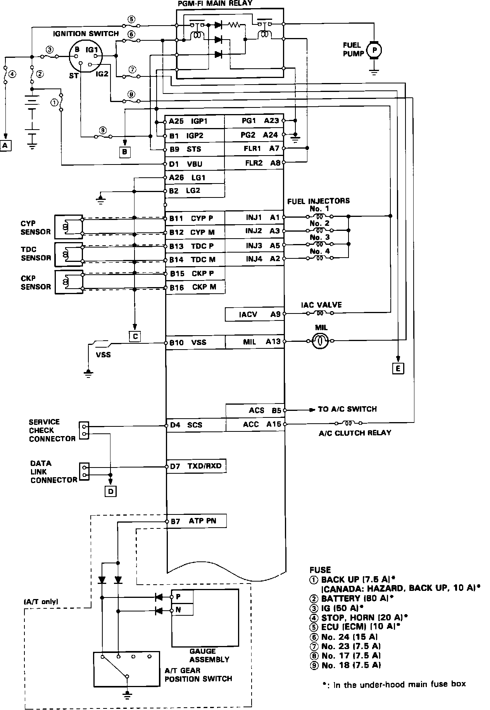
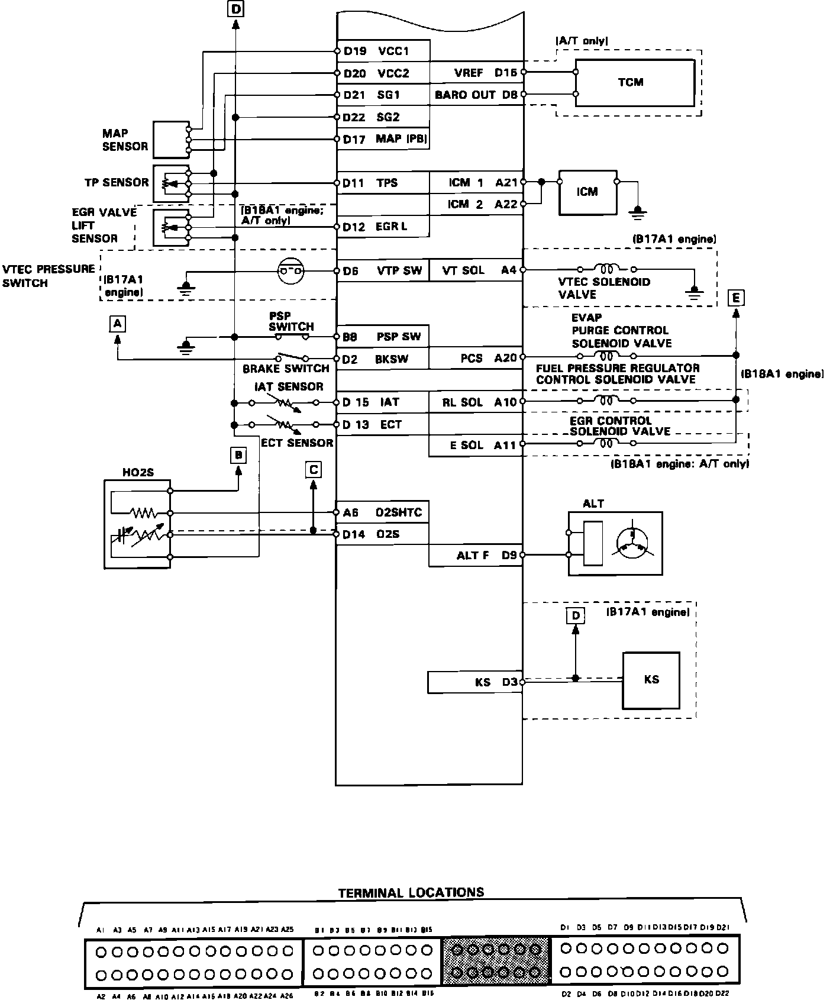
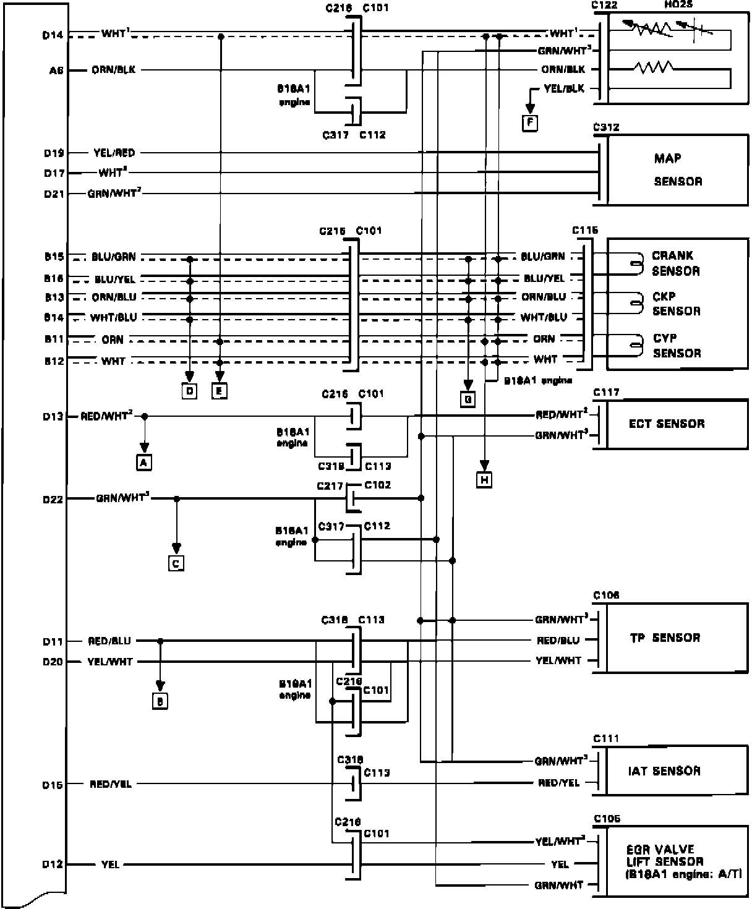
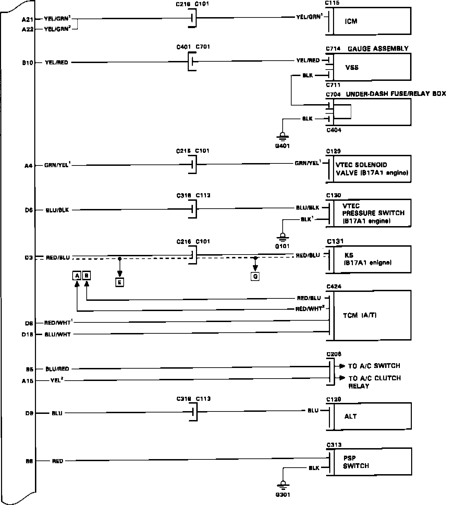
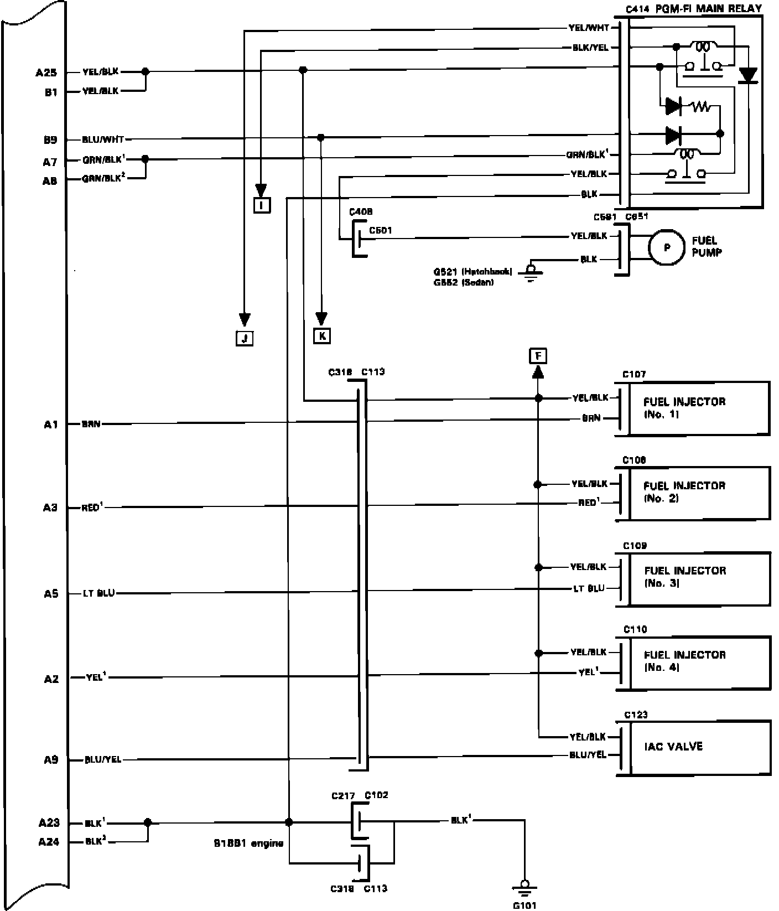
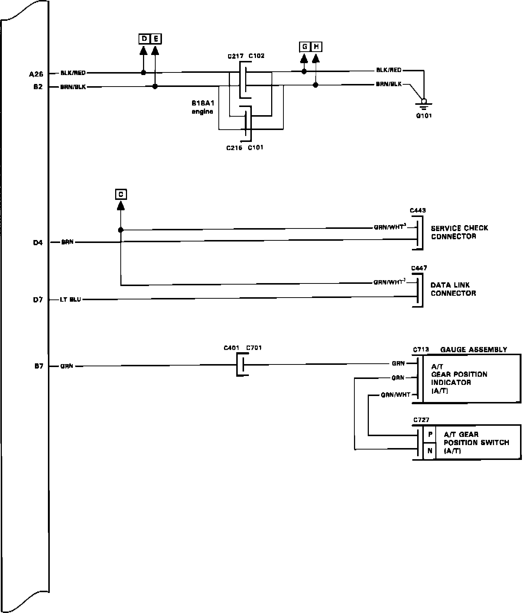
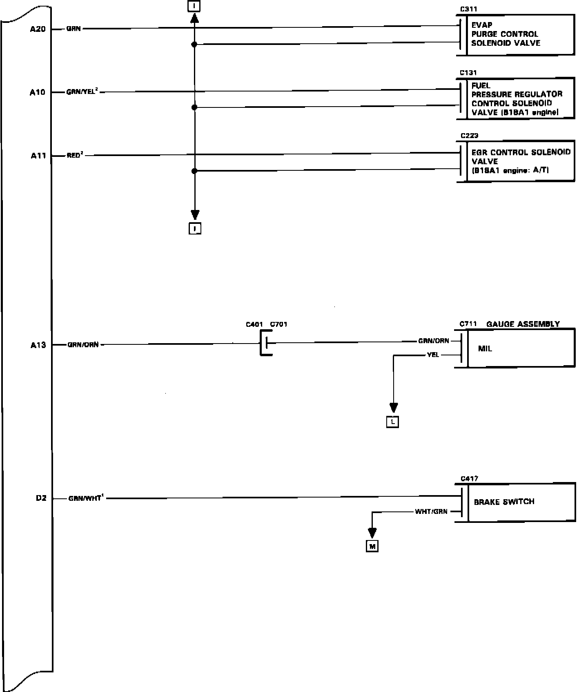
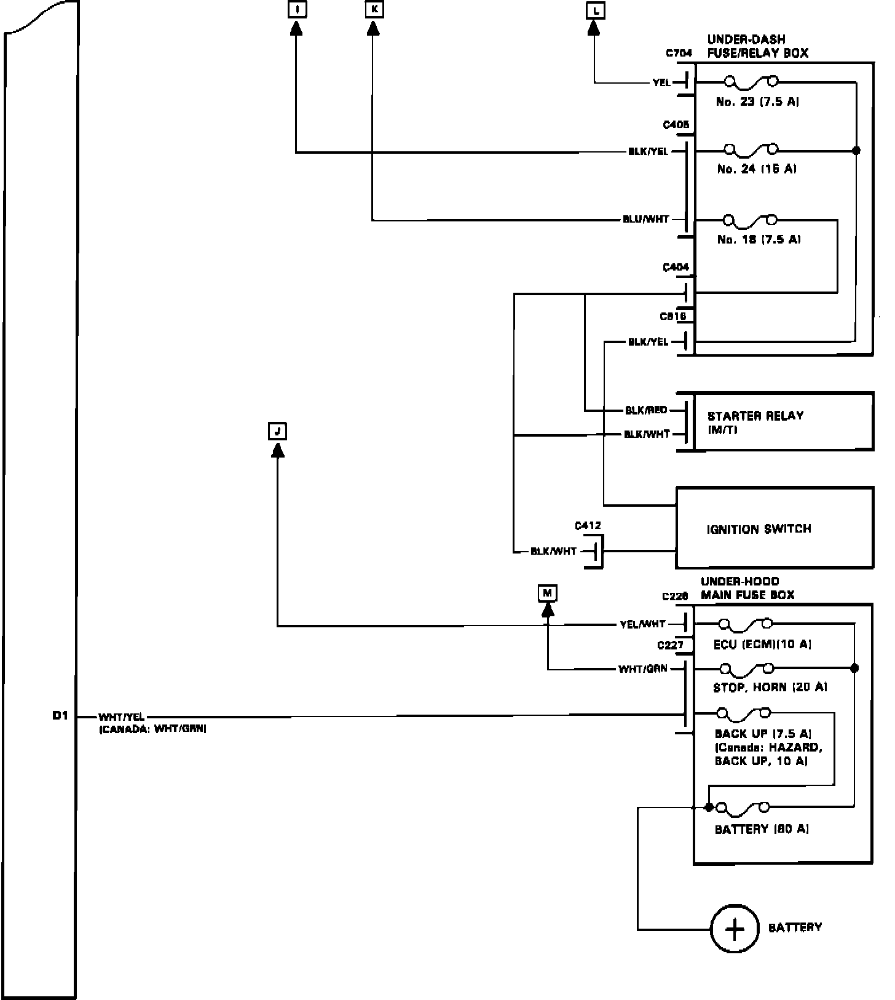

Engine Control Module: Diagrams
ECM Pin Connector Location (A):

ECM Pin Connector Location (B):

ECM Pin Connections (C):

ECM Pin Connections (D):

ECM Pin Connections (E):

ECM Pin Connections (F):

ECM Pin Connections (G):

ECM Pin Connections (H):
